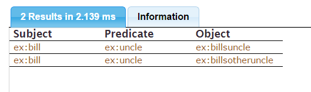

Introduction
This is not a semantics document, or a general description of SPARQL, or a standards document; for these, we advise the reader to look elsewhere, starting with the SPARQL Reference.
Note that this document sometimes omits details or complicating factors, entirely or until later. The tutorial uses the AGWebView client for AllegroGraph (see WebView).
To run this tutorial, start an AllegroGraph server and log into AllegroGraph WebView with your browser. See Server Installation and WebView for details.
Once you have logged in, create a sparqltutorial repository (type sparqltutorial into the Name: field under Create new repository and click the Create button). The result is shown in the first picture (you may have additional repositories, of course). In this and later illustrations, red text, arrows, etc. are added and will not be seen on your AGWebView display.
You need to define three namespaces, for prefixes ex, foaf. and xsd. First click on the sparqltutorial repository name to get to the page for that repository. You can display namespaces with the Namespaces choice on the Utilities menu or by displaying the Queries page by choosing new from the Queries menu (shown in the illustration) and displaying namespaces using the button next to the Edit Query area:
That displays an Edit Query area:
To the right there are buttons for showing namespaces and adding a namespace (indicated by the red arrow). Click on Show namespaces and namespaces defined for the repository are displayed. We want to add three namespaces:
- prefix
ex, URIhttp://example.com/ - prefix
foaf, URIhttp://xmlns.com/foaf/0.1/ - prefix
xsd, URIhttp://www.w3.org/2001/XMLSchema#
Check to see if any of these are already listed. For each not already listed, click on Add a namespace and enter the prefix and URI into the text boxes that appear. In the illustration, we have entered the prefix ex and the URI http://example.com/. Note that you do not put a colon (:) after the prefix or wrap the URI in angle brackets.
Once all the namespaces are defined, continue to the next section.
RDF and querying
RDF is an elegant formalism for describing graphs. These graphs can encode almost anything given the right vocabulary. The model is a superset of the relational model (so you can encode conventional databases) and trees (so you can encode anything that can be expressed in XML, for example). AllegroGraph gives you several options for extracting data from these graphs. SPARQL, the subject of this tutorial, is the standard tool for extracting data from RDF graphs.
Bindings
Consider a graph, G. G contains triples that share objects or subjects (using Turtle syntax, the : prefix is assumed to be defined for all subsequent examples):
prefix : <http://example#>
:john :knows :karen ;
:name "John" .
:karen :knows :alex ;
:name "Karen" .
:alex :name "Alex" . SPARQL's approach to selecting values is to take triple patterns and allow them to contain variables (denoted by a ? or $ before a string). These triple patterns match against real triples in the store, or inferred triples if you wish to use a reasoner. Every time a triple pattern matches against a triple, it produces a binding for each variable.
For example, the triple pattern
:john :knows ?y . produces one binding for ?y: karen.
The pattern
?x :knows ?y . produces more bindings:
| x | y |
=================
1 | john | karen |
2 | karen | alex | Each row in this table is a match for the pattern.
Multiple triple patterns
Variables can occur in multiple patterns that together comprise a query. Patterns that overlap in variables narrow down the results, while those that do not expand them.
To extend the earlier example:
?x :knows ?y .
?y :name ?name . produces the following results:
| x | y | name |
===========================
1 | john | karen | "Karen" |
2 | karen | alex | "Alex" | Adding an additional triple to the store:
:alex :name "Alexander" . yields the following:
| x | y | name |
================================
1 | john | karen | "Karen" |
2 | karen | alex | "Alex" |
3 | karen | alex | "Alexander" | This should tell you something interesting: a row exists in the results for every possible substitution of values into the query that would yield a set of triples that exist in the graph. Each row can contain only one binding, so Alex's two names fork the results.
SPARQL syntax
SPARQL borrows Turtle's syntax for triple patterns (Turtle is described here). A variable is a string starting with a ? or a $, but otherwise things are much the same. The above query pattern, borrowing the FOAF vocabulary and assigning it the prefix foaf, would be written as
?x foaf:knows ?y .
?y foaf:name ?name . You'll be shown more syntax as you progress through this tutorial.
Every triple pattern in SPARQL lives inside a graph pattern (as can other graph patterns!). Graph patterns are denoted by curly brackets, so our query would look like
{
?x foaf:knows ?y .
?y foaf:name ?name .
} Verbs and variables
SPARQL doesn't just do results querying — it can also ask questions, describe resources, and construct new graphs. One can also specify which columns to select from the result table. This SPARQL query includes a verb and a single-element list of variables:
SELECT ?name WHERE {
?x <http://xmlns.com/foaf/0.1/knows> ?y .
?y <http://xmlns.com/foaf/0.1/name> ?name .
} As you can see, a full URI can be specified in angle brackets.
Now we want to add some data, starting with four triples. We use SPARQL's INSERT DATA command, which gets pasted into the query area, as shown in the illustration. (SPARQL commands are case-insensitive but we usually use uppercase).
INSERT DATA { ex:john foaf:knows ex:karen .
ex:karen foaf:knows ex:alex .
ex:karen foaf:name "Karen" .
ex:alex foaf:name "Alex" .
} Once the statement is entered, click on the Execute button.
The system will display True and the data is now available.
Now that we have some data in our repository, we can start making queries. For, example, who is known by at least one other? The SPARQL querying command is SELECT (meaning select items which satisfy the statements in the SELECT body). The SELECT statement to ask ' who is known by at least one other?' is:
SELECT ?name WHERE {
?x <http://xmlns.com/foaf/0.1/knows> ?y .
?y <http://xmlns.com/foaf/0.1/name> ?name .
} x? and y? are variables. This statement says 'select all names of items where the item appears as the object in a triple where <http://xmlns.com/foaf/0.1/knows> is the predicate'. Note we use the complete URI of the predicates (instead of the abbreviated foaf:knows). We are just illustrating that either can be used at any time.
Back in the browser window, choose New from the Query menu and enter the query. Click the Execute button to send the query to AllegroGraph, which displays the results in a new field below the Query field. The results are "Karen" and "Alex" because we have triples
ex:john foaf:knows ex:karen
ex:karen foaf:knows ex:alex
ex:karen foaf:name "Karen"
ex:alex foaf:name "Alex" so both ex:karen and ex:alex are objects of triples which have the predicate foaf:knows, and "Alex" is the name of ex:alex, "Karen" the name of ex:karen.
Notice the Save button at the bottom of the Query field. If you type a name into the text box next that button (like query1) and click on Save, the query will be saved and can be retrieved with the Saved option on the Queries menu. (Recent queries can also be retrieved with the Recent option on that menu, but those will not survive restarting the server while saved queries will).
The Download button below the results field allows you to save the results in a selected format. (The query is actually re-executed by the server and all results are downloaded regardless of whether the Limit to 1000 results checkbox on the Query page is checked; a limit within the query is respected however.) The results will be saved to a file. Here is the file saved when clicking on Download with the SPARQL JSON results format:
{"head":{"vars":["name"]},"results":{"bindings":[
{"name":{"type":"literal","value":"Karen"}},
{"name":{"type":"literal","value":"Alex"}}]}} Congratulations! Your first SPARQL query.
We will not be showing as many pictures of the browser for the rest of this tutorial. Instead, we will often just say where queries, statements, etc. should go and what buttons you should click.
Patterns
SPARQL, being a fully-fledged query language, doesn't just have basic graph patterns. You can also:
- Nest patterns:
{ ?x ?y "Jim" . { ?y rdfs:subPropertyOf ex:someProperty } } - Mark patterns as optional
- Filter results based on built-in or custom predicates
- Find alternative matches using UNION patterns.
Basic and optional patterns
All triples and all other basic patterns inside a basic pattern must match. So, in the nested pattern above, ?y would bind to properties that were direct subproperties of ex:someProperty.
This is not the case for optional patterns. An optional pattern will not cause a result to fail if it does not match with the current bindings. This manifests itself as an empty (unbound) cell in the results table.
Example:
SELECT ?name ?email WHERE {
?x foaf:knows ?y .
?y foaf:name ?name .
OPTIONAL { ?y foaf:mbox ?email }
} If you run this on the data so far, you'll get two results in the output with no bindings shown for ?email.
Try taking out the word "OPTIONAL": you get no results.
Filters
Matching and comparing data is a very common operation in a query language. SPARQL has a full suite of comparisons. A common one is regex testing:
SELECT ?name WHERE {
?x foaf:knows ?y .
?y foaf:name ?name .
FILTER regex(?name, '^K.*')
} … returning only "Karen".
You can even define your own, referencing them by URI, though this is a more involved topic, left for later discussion.
Filters and optionals
It's important to note the interaction between filter patterns and optional patterns. Remember that an optional pattern contributes to the results if it matches, and leaves the results unchanged if it does not. An optional pattern can do some interesting things to the results when combined with a filter.
Try the following:
INSERT DATA { ex:book1 ex:title "Cheap Book" .
ex:book1 ex:price "30"^^xsd:integer .
ex:book2 ex:title "Expensive Book" .
ex:book2 foaf:name "90"^^xsd:integer .
} Note we are using the xsd prefix we defined with the other namespaces above. Call this data data2. Now lets ask a query (we put in a redundant PREFIX statement for a namespace already defined, just to show how you can define prefixes on the fly):
PREFIX ex: <http://example.com/>
SELECT ?title ?price WHERE {
?x ex:title ?title .
OPTIONAL {
?x ex:price ?price .
FILTER ( ?price < 40 )
}
} You should get something like:

The price for the expensive book is not returned, because it wasn't under 40. If you move the price triple pattern to outside the optional, you get the expensive book's price in the results. If you add another book without a listed price, the optional will also fail to match, so expensive books and books with no price are indistinguishable.
Remember this when you write queries!
Combining filters
You can combine filters with boolean operators, parentheses, and so on:
SELECT ?title ?price WHERE {
?x ex:title ?title .
OPTIONAL {
?x ex:price ?price .
}
FILTER ( bound(?price) && ?price < 40 )
} … matching only books where the OPTIONAL matches, providing a price, and the price is less than 40. On the example data, this returns one result: the cheap book and its price, 30.
UNION
As well as using optional patterns to extend data, SPARQL allows you to bind variables using alternatives. Using UNION you can specify a number of graph patterns, separated by the UNION keyword, that can each contribute to the query result. The union pattern matches if any of its graph patterns match, and all of them have a chance to contribute. Try the following:
INSERT DATA { ex:a ex:b ex:c .
ex:a ex:d ex:e .
} And try this query:
SELECT ?third {
{ <http://example.com/a> <http://example.com/b> ?third }
UNION
{ <http://example.com/a> <http://example.com/d> ?third }
} You'll see ex:c and ex:e under the heading third.
That the union pattern can match as a whole, but the sub-patterns do not have to contain the same variables, can be useful; the sub-patterns can contain optionals to contribute additional information, or bind to differently-named variables to track which branch was applied.
Ordering and slicing results
SPARQL can post-process result sets.
DISTINCT and REDUCED
A SELECT query can optionally be specified to return unique results for each row. Query patterns often return duplicate bindings, and implementations must not eliminate duplicates unless explicitly instructed. (See delete-duplicate-triples for information on duplicate deletion.)
Simply add the DISTINCT keyword:
PREFIX foaf: <http://xmlns.com/foaf/0.1/>
SELECT DISTINCT ?x ?y WHERE {
?x foaf:knows [ foaf:knows ?y ] .
} Note that this removal of duplicates occurs after the results are refined down to the specified variable list.
In SPARQL, the ... [ ... ] syntax represents anonymous blank nodes. The full details can be found in the SPARQL reference (here and here) but the general idea is that:
[]specifies a blank node,[ ?p ?o ]is the same as[] ?p ?oand is equivalent to writing out a blank node in longhand as in_:b25 ?p ?o,- The blank node can be used in multiple triple-patterns. For example, this pattern
[ :p "v" ] :q "w"is equivalent to these two combined patterns:_:b23 :p "v" . _:b23 :q "w" .
and this pattern :x :q [ :p "v" ] . is the same as
:x :q _:b19 .
_:b19 :p "v" . See the SPARQL reference guide for more details and other useful abbreviations.
If you do not need duplicates to be removed, but you do not need the redundant entries, either — which would be the case if you are relying on counts to be correct, for example — then you can specify REDUCED instead of DISTINCT. This allows AllegroGraph to discard duplicate values if it's advantageous to do so.
ORDER BY
Ordering directives can be appended to a SELECT query. These allow you to impose a sorted order on a results set.
Naturally, the results of a query can be ordered by any combination of variables in the results, in ascending or descending order. Furthermore, multiple sorting criteria can be specified to break ties.
Criteria can be:
- Simple variables:
ORDER BY ?firstName - Arbitrary functions, named by URI:
ORDER BY ex:calculateImportance(?person) - Nested SPARQL expressions, surrounded by parentheses, including arbitrary boolean operations (e.g., && and ||; see this section of the SPARQL specification for more):
ORDER BY (REGEX('Mr.*', ?title) && BOUND(?employer)) ASC(?surname)
This expression will sort the results into two partitions: one containing people whose title begins with "Mr" and are employed, and its counterpart. Each category will then be sorted alphabetically by surname.
These criteria can be optionally annotated with ascending/descending (ascending by default):
ORDER BY DESC(?age) ASC(?lastName) The values generated by the criteria (e.g., the bound value of a variable) are compared according to a strict set of rules to yield an ordering. If a criterion does not yield an ordering, the next criterion is applied, and so on until an ordering is achieved. If an ordering is never achieved, then the order is unspecified.
LIMIT and OFFSET
Once solutions are ordered, it makes sense to be able to return 'slices' of a sequence of results. LIMIT is an upper bound on the number of results returned. E.g., LIMIT 5 will return no more than 5 results for the query. OFFSET n causes the first n results to be discarded. For example:
PREFIX foaf: <http://xmlns.com/foaf/0.1/>
SELECT ?name WHERE {
?person foaf:name ?name .
}
ORDER BY ?name
LIMIT 10
OFFSET 20 implements the usual ten-per-page style of results, starting on page 3 — results 21–30 inclusive. If the number of results is smaller than OFFSET, no results are returned. If LIMIT is 0, no results are returned.
It is technically possible to apply LIMIT and OFFSET to unordered results, but this is largely pointless, as the values returned in each slice are unpredictable.
Other verbs
The most common use of SPARQL is to return results bindings from queries — SELECT. As previously mentioned, though, there are three other things it can do.
DESCRIBE
In many situations you simply do not have enough information to properly query a store for information about a resource -- you might not know which properties it has, for example. DESCRIBE allows you to provide a list of resources or variables that you wish to be described; the variables can be bound by an implicit SELECT query.
DESCRIBE <http://example.com/fish> ?x WHERE {
?x ?y <http://example.com/fish>
} This query asks for a description of fish and any resource directly related to fish. The implementation of DESCRIBE uses Concise Bounded Descriptions as a formalism for descriptions; informally, this is the smallest useful section of outward-facing graph around each resource.
DESCRIBE returns a collection of triples, not a set of bindings, and these are ordinarily serialized in RDF/XML.
Example:
PREFIX foaf: <http://xmlns.com/foaf/0.1/>
PREFIX ex: <http://example.com/>
DESCRIBE ex:karen ?friend {
ex:karen foaf:knows ?friend .
} displays
If you download as N-Triples (as suggested in the Download widget), you get a file containing:
<http://example.com/karen> <http://xmlns.com/foaf/0.1/knows> <http://example.com/alex> .
<http://example.com/karen> <http://xmlns.com/foaf/0.1/name> "Karen" .
<http://example.com/alex> <http://xmlns.com/foaf/0.1/name> "Alex" . CONSTRUCT
A CONSTRUCT query returns a new collection of RDF triples based on the results of the query and a template. Note that CONSTRUCT produces only valid RDF triples. Thus if the subject or predicate of a triple is a literal, then the triple will be silently discarded from the result.
Much of the time, your purpose for querying an RDF store is to construct a new set of triples. For example, you can do a limited amount of inference this way:
INSERT DATA {ex:bill ex:mother ex:doris .
ex:doris ex:brother ex:billsuncle .
ex:fred ex:brother ex:billsotheruncle .
ex:bill ex:father ex:fred .
} And then this query:
PREFIX ex: <http://example.com/>
SELECT * WHERE {
{ ?x ex:mother [ ex:brother ?uncle ] }
UNION
{ ?x ex:father [ ex:brother ?uncle ] }
} produces the following
CONSTRUCT allows you to yield triples directly from the query:
PREFIX ex: <http://example.com/>
CONSTRUCT {
?x ex:uncle ?uncle
}
WHERE {
{ ?x ex:mother [ ex:brother ?uncle ] }
UNION
{ ?x ex:father [ ex:brother ?uncle ] }
} produces these triples:

These triples have not been added to the store. That can be done with a similar query, replacing CONSTRUCT with INSERT:
PREFIX ex: <http://example.com/>
INSERT {
?x ex:uncle ?uncle
}
WHERE {
{ ?x ex:mother [ ex:brother ?uncle ] }
UNION
{ ?x ex:father [ ex:brother ?uncle ] }
}
What the tutorial hasn't covered
There are a lot of things! SPARQL can also:
- Restrict queries to a set of graphs:
FROM,FROM NAMED - Match graphs:
GRAPH - Serialize to many different formats
- Perform aggregation on result sets
- Ask boolean queries:
ASK - Using AllegroGraph's geospatial support with SPARQL (see nD Geospatial Magic Properties for details)
Take a look at the reference for more details.
You can use other clients with SPARQL. See for example SPARQL Tutorial using the Lisp Client.